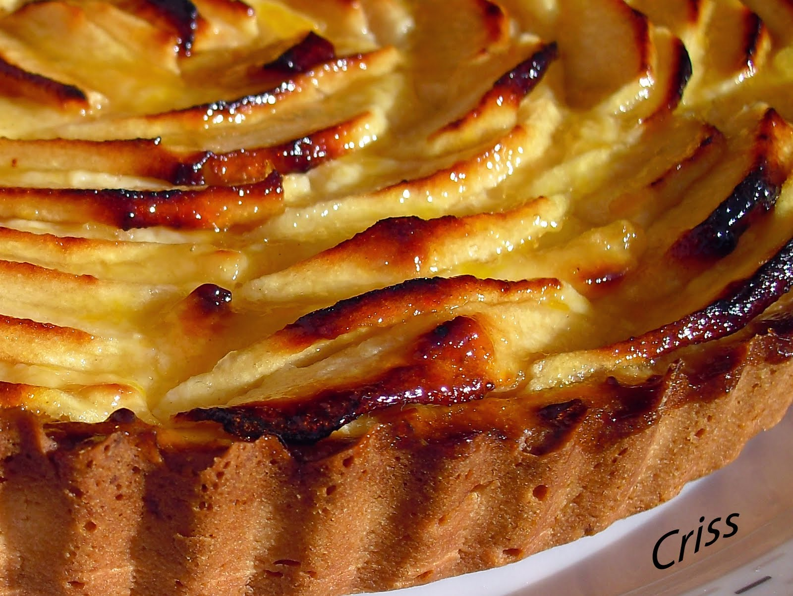
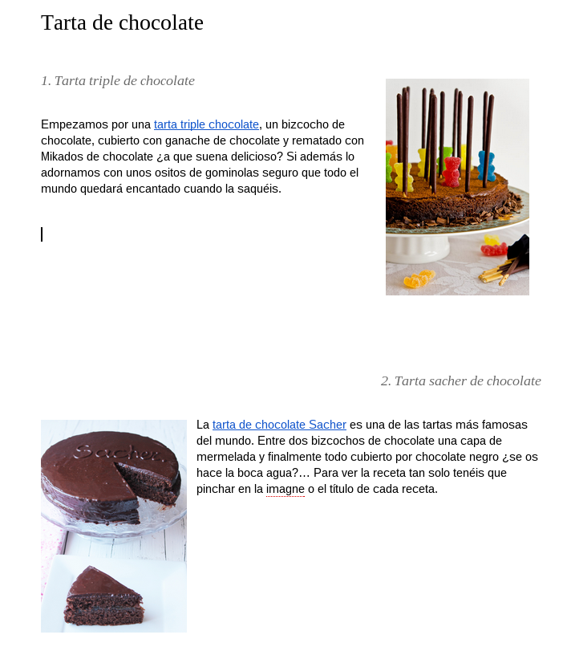

Vamos a realizar una práctica de fusión de todos los conceptos vistos hasta ahora en Google Drive, desde crear carpetas, subir imágenes y compartir información, hasta agrupar toda esa información en la creación de documentos de manera colaborativa. ¡Espero que os guste!
Paso 1
El profesor va a compartir una carpeta llamada Las mejores recetas, vacía, que compartirá con todos los alumnos/as de la clase.
- Observa el proceso de creación de la carpeta.
- Presta especial atención a la compartición de la carpeta con todos los alumnos/as de la clase.
Paso 2
Vamos a crear ahora una carpeta donde almacenar el contenido personal de nuestro documento colaborativo.
- Crea una carpeta dentro de la carpeta Las mejores recetas, y ponle de nombre tu nombre de Pila.
- Pregunta ¿Esta carpeta será visible para el resto de personas aunque no les asignemos permisos explícitos?
Paso 3
Queremos crear un documento propio cada uno de nosotros dentro de la carpeta compartida, que consistira en una serie de imágenes que lo documentarán de manera gráfica.
- Busca y descarga 3 imágenes de una receta que luego documentaremos. Pueden ser los ingredientes, el plato final una vez cocinado, o lo que tú quieras.
- Almacena esas 3 imágenes dentro de tu carpeta en la zona común.
Paso 4
Crea un documento de Google Docs en la carpeta Las mejores recetas, con el nombre de la receta que elijas, y crea un documento con aspecto similar al siguiente:
Paso 5
Entra en las recetas de tus compañeros y añádeles algún comentario a la receta. ¿Recibes algún correo cuando alguien comenta tu receta?